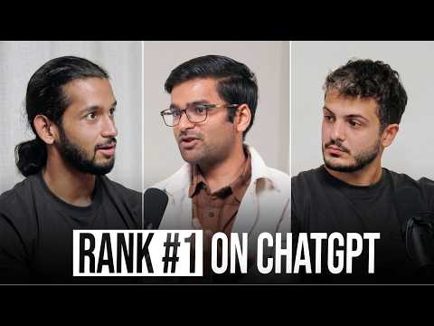

Đo như paid social, làm như search
Gamma cho rằng click trực tiếp không phản ánh hết ảnh hưởng của AEO. Nên kết hợp referral traffic với self-reported attribution — ví dụ “Bạn biết đến chúng tôi từ đâu?”.[1]
Kho nghiên cứu sống dành cho Huge Win Media — gom bằng chứng, tách nhận định khỏi giả thuyết và biến từng nguồn thành thứ HWM có thể thử, đo và cải thiện.
Đây là kết luận tạm thời từ nguồn đầu tiên, không phải “luật AEO”. Mỗi link mới sẽ được dùng để củng cố, phản biện hoặc sửa lại phần này.
AEO không phải một bài SEO mới. Nó là một hệ thống phân phối luôn bật: tạo dấu vết nhất quán trên website, nguồn bên thứ ba và cộng đồng để các answer engine có thể tìm, hiểu, so sánh và nhắc lại thương hiệu.
Gamma cho rằng click trực tiếp không phản ánh hết ảnh hưởng của AEO. Nên kết hợp referral traffic với self-reported attribution — ví dụ “Bạn biết đến chúng tôi từ đâu?”.[1]
Nguồn ước lượng chỉ khoảng 30–40% playbook trùng nhau giữa ChatGPT, Claude, Perplexity và Google AI; phần còn lại phải tùy engine.[1]
Vấn đề không nằm ở việc AI có viết hay không, mà ở độ sâu, tính hữu ích, bằng chứng và việc nội dung có thực sự giúp người đọc so sánh hay ra quyết định.[1]
32 tip được rút trực tiếp từ cuộc phỏng vấn với Ravish Agrawal. Phần này ưu tiên mô tả cách họ thực sự làm, điều họ quan sát được và chỗ nào mới chỉ là giả thuyết — chưa chuyển vội sang bài toán của HWM.
PHẦN TRỌNG TÂM · ĐỌC TỪ TRÊN XUỐNG HOẶC NHẢY THEO NHÓMCách Gamma chọn kênh, phân bổ mục tiêu và duy trì AEO.
Ravish chủ động tìm những kênh thị trường chưa hiểu hết, thử sớm rồi mới xác định phương pháp có hợp Gamma hay không. AEO và Reddit là hai ví dụ họ vào sớm; ChatGPT Ads là thử nghiệm mới hơn. Nguyên tắc song hành của đội là “don’t be boring”: nội dung và GTM phải thú vị, vui và chống lại cảm giác nhàm chán vốn gắn với presentation.[1]
Họ ước lượng chỉ 30–40% cách làm có thể dùng chung; khoảng 60% phải thay đổi theo ChatGPT, Google AI, Perplexity hoặc Claude. Vì vậy “AEO chung chung” dễ che mất phần việc quan trọng nhất.[1]
Một số nội dung trên YouTube hoặc LinkedIn được Gamma đầu tư chủ yếu để xây dấu vết cho answer engine, dù bản thân kênh đó không mang nhiều traffic trực tiếp.[1]
Với initiative AEO, họ có thể dành khoảng 80% quyết định cho agent/crawler và 20% cho trải nghiệm con người. Nội dung không cần clickbait, nhưng người vô tình xem vẫn phải hiểu và thấy hữu ích.[1]
Không có bài đăng một lần rồi xong. Họ tiếp tục tạo, theo dõi và làm mới dấu vết vì citation có thể biến mất, prompt thay đổi và nền tảng đổi cách crawl theo chu kỳ rất ngắn. Ravish ví cửa sổ organic hiện tại với Facebook năm 2012: nên tận dụng, nhưng không giả định nó sẽ mở mãi.[1]
Gamma phát hiện cơ hội và chọn truy vấn để đánh.
Họ chú ý AEO khi referral traffic từ ChatGPT tăng 8×, dù vẫn dưới 1% tổng traffic. Tín hiệu nhỏ nhưng tốc độ tăng khác thường đủ để mở một hướng điều tra mới.[1]
Với YouTube, Gamma ưu tiên câu chữ người dùng thực sự hỏi trong prompt hoặc search phrase thay vì tiêu đề clickbait. Mục tiêu là để transcript và heading khớp đúng cách answer engine diễn giải câu hỏi.[1]
Thay vì lao vào “best CRM”, họ đề xuất bắt đầu ở “best CRM for SMB”, “for fintech”, “for health tech”, thậm chí ngách sâu hơn. Khi bối cảnh hẹp, cạnh tranh thấp hơn và cơ hội tạo relevance/topical authority rõ hơn.[1]
Một nhánh hỏi khách hàng mục tiêu đang ở đâu; nhánh còn lại hỏi vấn đề/sản phẩm liên quan đang được bàn ở đâu. Với Gamma, đó có thể là cộng đồng SaaS/founder hoặc các cộng đồng PowerPoint, Canva và presentation.[1]
Cách họ tạo nội dung có thể được crawl, so sánh và trích dẫn.
Website cho phép Gamma chủ động mô tả sản phẩm, use case và mối quan hệ với đối thủ. Theo quan sát của họ, nội dung mới trên site có thể được crawl nhanh và được trích dẫn tương đối tốt.[1]
Họ phản đối cách tạo hàng loạt bài mỏng chỉ lặp từ khóa. Nội dung nên giải thích sâu lý do, tiêu chí, điểm khác nhau và thông tin giúp người đọc ra quyết định; AI có thể hỗ trợ viết nếu đầu vào và nghiên cứu đủ tốt.[1]
Pattern rõ nhất Ravish nhìn thấy không phải view hay upvote, mà là thương hiệu được người khác nhắc đến cạnh một lựa chọn khác. Nội dung chỉ nói riêng về mình thường yếu hơn nội dung giúp engine hiểu “khác gì, phù hợp lúc nào”.[1]
Blog, PR và review ngoài domain là cụm quan trọng thứ hai hoặc thứ ba trong playbook của họ. Trong mental model của Ravish, Reddit chủ yếu tác động training data/memory; owned và third-party blogs là “cited data”, có khả năng kéo người dùng về hệ sinh thái Gamma.[1]
Ravish chưa thấy answer engine luôn ưu tiên website lâu đời. Ở giai đoạn hiện tại, site nhỏ nhưng có nội dung AI-first, rõ và sát truy vấn vẫn có cơ hội; đây là quan sát thực chiến, chưa phải quy luật đã kiểm chứng.[1]
Phần tactical chi tiết nhất trong cuộc phỏng vấn.
Cộng đồng riêng của Gamma chứa câu hỏi thực như cách export presentation sang PowerPoint, PDF hoặc ảnh. Những thread hỗ trợ cụ thể này đã được họ thấy xuất hiện trong citation.[1]
Subreddit mới của thương hiệu thường được nhặt chậm hơn. Với đội mới bắt đầu, họ khuyên hiện diện ở cộng đồng đã có người dùng trước; subreddit riêng là tài sản dài hạn cần xây dần.[1]
Gamma có thể nói chuyện trong cộng đồng PowerPoint vì người dùng tạo deck bằng Gamma rồi export sang PowerPoint. Họ bước vào cuộc trò chuyện qua luồng công việc thật và tính tương thích mở, không bằng câu “Gamma rất tuyệt”.[1]
Frame hữu ích là “Gamma khác PowerPoint/Google Slides ở đâu?” thay vì chỉ khen Gamma. Họ còn chủ động chọn đối thủ muốn đứng cạnh để định vị điểm mạnh như MCP, Zapier, import/export và hệ sinh thái mở.[1]
Ravish chưa thấy comment làm thương hiệu được trích dẫn nhiều hơn. Ông xem comment chủ yếu là tín hiệu sentiment; cố phủ comment để leo citation không phải chiến thuật họ tin là hiệu quả.[1]
Theo dữ liệu họ quan sát, nội dung Reddit mới thường cần khoảng 30–45 ngày để trở thành citation trong ChatGPT. Perplexity có thể nhặt nhanh hơn nhiều với truy vấn rất sát, đôi khi từ ngày hôm sau.[1]
Gamma thường bỏ qua cộng đồng chỉ có vài nghìn hoặc vài chục nghìn thành viên vì không đủ tác động ở quy mô của họ. Nhưng Ravish thừa nhận startup có thể khai thác cộng đồng nhỏ, nhất là khi truy vấn đủ ngách.[1]
Ưu tiên và cơ chế khác nhau theo nơi người dùng hỏi.
Với consumer/prosumer của Gamma, hơn 90% phần AEO được họ quy cho ChatGPT. Reddit là kênh có ảnh hưởng rõ nhất ở đây; website sở hữu và third-party tiếp tục hỗ trợ retrieval/citation.[1]
Đây là nơi câu “SEO tốt là AEO tốt” hợp lý nhất theo Ravish. Muốn hiện diện trong Google AI, họ vẫn xem SEO, relevance và phân phối từ Google là lớp bắt buộc chứ không tách thành game hoàn toàn mới.[1]
Họ thấy Perplexity coi trọng website khác nói về thương hiệu và có thể nhặt nội dung rất nhanh khi truy vấn đủ cụ thể. Vì thế third-party coverage và câu chữ sát phrase đáng ưu tiên hơn Reddit-first đơn thuần.[1]
Gamma đã ra MCP connector và thấy usage tăng khi người dùng có thể yêu cầu Claude tạo presentation bằng Gamma ngay trong workflow. Ravish xem Claude gần “app store” hơn search engine. Tuy nhiên, MCP hiện chưa tự tạo discovery: Gamma vẫn phải acquire user, giới thiệu connector và hướng dẫn họ kết nối.[1]
Gamma được trích dẫn từ video 400K view lẫn 18K view; LinkedIn post/article ít engagement vẫn có thể được index. Họ chưa tìm thấy ngưỡng view, like hoặc comment đáng tin cậy, nên ưu tiên nội dung và ngữ cảnh hơn vanity metrics.[1]
Với consumer/prosumer, Ravish xếp ChatGPT → Google AI Overviews → Perplexity → Claude. Với enterprise, ông có thể đưa Claude lên đầu, sau đó cân nhắc Copilot; đây là heuristic theo hành vi người dùng, không phải benchmark đã kiểm chứng.[1]
Ravish nói Gamma chưa ở mức top-class với Google AI Overviews vì trước đó chưa đầu tư đủ sự chú ý. Họ dự kiến tăng đầu tư khi AI Mode phát triển nhanh hơn dự đoán; đây là khoảng trống thật trong playbook, không phải thành công đã có.[1]
Ravish thấy Quora và Medium vẫn được index; Substack yếu hơn khi nội dung bị gated. LinkedIn và Instagram là bet 6–12 tháng dựa trên UGC và reputation signals, chưa phải playbook Gamma đã chứng minh. X/Twitter và Discord hiện chưa có pattern đủ rõ.[1]
Cách họ nhìn traffic, attribution và tuổi thọ citation.
Gamma đưa ChatGPT thành lựa chọn rõ trong câu hỏi “How did you hear about us?”. Referral click có lúc giảm nhưng self-reported discovery tiếp tục tăng, cho thấy ảnh hưởng kiểu view-through mà last-click không phản ánh hết.[1]
Họ lưu trong spreadsheet: prompt nào trích nguồn nào, citation share thay đổi ra sao và khi nào thương hiệu biến mất. Dù là khách hàng Profound, Gamma vẫn chưa đo được lúc citation bị gỡ hoặc suy giảm nên tiếp tục theo dõi thủ công; chu kỳ ba tháng mới chỉ là giả thuyết vận hành.[1]
Những chỗ nguồn thừa nhận chưa có công thức chắc chắn.
Họ chưa biết chính xác vì sao một Reddit post thắng citation, tuổi thọ citation là bao lâu, LinkedIn ưu tiên tín hiệu nào hay memory tác động đến discovery đến mức nào. Gamma thấy tín hiệu hứa hẹn về memory và first-mover advantage, nhưng cơ chế tái đề xuất vẫn chỉ là thesis cần kiểm chứng.[1]
Đối chiếu từng câu trong post của Ira Bodnar với phát biểu gốc trong video. Post rất hữu ích để scan nhanh, nhưng nhiều câu đã biến quan sát hoặc giả thuyết thành quy luật chắc chắn.[1][2]
| # | Claim trong post | Kết luận | Đối chiếu với video gốc |
|---|---|---|---|
| 1 | Viết content cho Claude là vô ích; Gamma làm app Claude. | Phóng đại | Ravish nói Claude cite ít hơn và hướng phù hợp là MCP/ecosystem. Gamma có connector và thấy usage; “vô ích” là lời tuyệt đối hóa.[1][2] |
| 2 | Gamma nhét ưu đãi “10% extra” vào file agent đọc để hack signup. | Gán nhầm | Ravish nói một vài người bạn làm growth đang thử cách này và nói rõ Gamma chưa làm nhiều ở mảng đó. Không phải tactic Gamma đã triển khai.[1][2] |
| 3 | ChatGPT trả lời 60% từ live web, 40% từ memory. | Chưa xác minh | Con số được Ravish nhắc lại từ “một nghiên cứu nào đó”, không nêu tên và không phải dữ liệu Gamma đo. Nên giữ như claim gián tiếp, không phải fact nền tảng.[1][2] |
| 4 | LLM không bao giờ cite lời khen, chỉ cite so sánh. | Phóng đại | Ravish chỉ nói comparison là pattern gần nhất ông nhìn thấy và thừa nhận chưa có công thức. “Không bao giờ” không có trong nguồn.[1][2] |
| 5 | ChatGPT gửi nhiều khách hơn analytics thể hiện 8×. | Ghép sai số | 8× là tốc độ tăng referral traffic trong một giai đoạn, không phải mức analytics đếm thiếu. Self-report cao hơn click-through là quan sát riêng, không có hệ số 8×.[1][2] |
| 6 | ChatGPT Search chạy trên Bing. | Claim nguồn | Ravish nói ChatGPT lấy phần lớn query từ Bing, nhưng không đưa bằng chứng và đây là cơ chế có thể thay đổi. Nên ghi “theo Ravish”, không đóng thành sự thật phổ quát.[1][2] |
| 7 | Chỉ ChatGPT đọc Reddit; Claude và Gemini hoàn toàn bỏ qua. | Quá tuyệt đối | Ông nói “Reddit only works for ChatGPT” theo playbook/quan sát của mình. “Các engine khác hoàn toàn không đọc” là diễn giải mạnh hơn nguồn. Mốc 30–45 ngày cho ChatGPT được nêu trong video.[1][2] |
| 8 | Memory khiến brand thắng mọi câu trả lời lặp lại. | Giả thuyết | Gamma thấy tín hiệu hứa hẹn và Ravish tin memory tạo first-mover advantage, nhưng ông gọi hệ thống là black box. “Thắng mọi repeat answer” chưa được chứng minh.[1][2] |
| 9 | Video 18K và 400K view đều được cite; dùng prompt làm title. | Khá sát | Đúng với quan sát và cách Gamma làm. Chỉ cần tránh nâng thành “view hoàn toàn không quan trọng”; nguồn nói họ chưa thấy pattern theo view.[1][2] |
| 10 | Subreddit nhỏ không bao giờ tạo citation. | Sai | Gamma bỏ qua cộng đồng nhỏ vì không đủ tác động ở quy mô của họ. Ravish thừa nhận startup vẫn có thể dùng và AEO vẫn có thể nhặt nội dung từ subreddit nhỏ, nhất là query ngách.[1][2] |
| 11 | Substack ít được cite vì gated; Medium và Quora vẫn được index. | Khá sát | Phản ánh đúng phát biểu. Nuance: Ravish thấy Quora được cite nhưng chưa thấy nó “influence” rõ như Reddit.[1][2] |
| 12 | Website của Gamma là nguồn được cite nhiều thứ hai. | Gần đúng | Ravish xếp owned website thứ hai trong ranking, nhưng nói vị trí 2–3 thường đổi với third-party websites. Đây là ranking quan sát, không phải bảng số liệu citation chính thức.[1][2] |
| 13 | Một comment Reddit tiêu cực mắc trong ChatGPT nhiều tháng; sentiment xấu được cite ngang tốt. | Gán nhầm | Đây là anecdote và theory của người dẫn về một công ty khác. Ravish nói ông chưa đào sâu và không xác nhận cơ chế đó. Không phải learning của Gamma.[1][2] |
| 14 | Citation chết sau khoảng ba tháng; Gamma chiếm lại hàng quý. | Biến giả định thành fact | Gamma có theo dõi citation bằng spreadsheet. Nhưng “ba tháng” chỉ là ví dụ giả định khi Ravish suy nghĩ về half-life; ông nói rõ chưa biết tuổi thọ thật.[1][2] |
| 15 | B2B: Claude và Copilot thắng ChatGPT. | Heuristic | Với enterprise, Ravish đoán có thể xếp Claude đầu và Copilot thứ hai. Ông cũng nói chưa biết cách khiến Claude recommend tool. “Beat ChatGPT” nghe chắc chắn hơn nguồn.[1][2] |
| 16 | Topic rộng mất 45 ngày; topic ngách chỉ mất một ngày. | Trộn ba quan sát | 30–45 ngày là Reddit → ChatGPT; next-day là phrase cụ thể → Perplexity; Google AI nhặt trong một ngày là anecdote của người dẫn. Không phải một quy luật broad-vs-niche thống nhất.[1][2] |
| 17 | Chưa ai từng thấy X được LLM cite. | Quá rộng | Ravish và người dẫn nói họ chưa thấy X được index/cite và sẽ kiểm tra thêm. Không đủ cơ sở để nói “nobody has ever seen”.[1][2] |
| 18 | LinkedIn citation hỗn loạn; post 500K like và no-name được cite ngang nhau. | Đúng lõi | Ravish chưa thấy engagement hoặc influencer status là pattern và đánh giá LinkedIn còn sớm. “Cùng tỷ lệ” không được đo trong nguồn.[1][2] |
| 19 | Instagram là kênh tiếp theo; IG và LinkedIn tác động LLM trong 6–12 tháng. | Đúng là bet | Phản ánh đúng thesis của Ravish. Đây là dự đoán dựa trên UGC và reputation signals, không phải kết quả Gamma đã kiểm chứng.[1][2] |
| 20 | AI Mode đang làm CTR sụp đổ cho mọi người. | Phóng đại phạm vi | Ravish nói các growth peer ông trao đổi đều thấy CTR giảm. Không có benchmark hay số liệu để mở rộng thành “everyone”.[1][2] |
| 21 | Fake Gamma đang đánh cắp signup. | Đúng hiện tượng | Gamma thấy copycat clone landing page, dùng tên tương tự và mua ads; người dùng có thể nhầm. “Stealing signups” là diễn giải hợp lý nhưng nguồn không định lượng signup bị mất.[1][2] |
| 22 | Bet tiếp theo: làm sản phẩm để agent tự signup; Claude Code tự cài năm tool. | Đúng là bet | Ravish bullish về agent-first product và kể Claude Code dùng khoảng năm tool ông không cần biết. Ông nói Gamma chưa làm nhiều và chưa có mental model rõ; đây không phải tactic đã chứng minh.[1][2] |
| 23 | ChatGPT không biết Forbes là Forbes; blog vô danh được cite ngang nhau. | Phóng đại | Ravish gọi website AEO hiện tại là “level playing field”, nhưng vẫn thừa nhận Forbes có authority. “Không biết Forbes là Forbes” là câu giật mạnh hơn nguồn; cửa sổ có thể đóng là thesis, không phải timeline chắc chắn.[1][2] |
Dùng tốt như checklist để phát hiện chủ đề, nhưng không nên dùng nguyên văn làm playbook. Giá trị lớn nhất nằm ở các pattern: prompt-led content, comparison, self-report attribution, engine-specific tactics và always-on tracking. Các câu có số liệu hoặc chữ tuyệt đối như “never”, “only”, “8×”, “three months” cần quay lại nguồn gốc trước khi hành động.
Thứ tự dưới đây phản ánh kinh nghiệm được chia sẻ trong nguồn đầu tiên, chưa phải benchmark độc lập. HWM nên coi đây là giả thuyết ưu tiên để kiểm chứng.
Được đánh giá ảnh hưởng nhất với ChatGPT. Hữu ích cho câu hỏi so sánh, ngữ cảnh cộng đồng và tín hiệu sentiment.[1]
Quan sát · Mạnh nhất: ChatGPTDễ kiểm soát cách mô tả dịch vụ, use case và đối thủ; nội dung mới có thể được crawl và trích dẫn.[1]
Quan sát · Dữ liệu có thể trích dẫnBlog, PR, review và website khác tạo xác nhận độc lập. Nguồn nhận định Perplexity đặc biệt coi trọng lớp này.[1]
Quan sát · Authority bên ngoàiTranscript giúp answer engine hiểu nội dung. Số view cao chưa được quan sát là điều kiện bắt buộc để được trích dẫn.[1]
Quan sát · Transcript chuyên sâuĐã có cả post và article được index, nhưng pattern còn mỏng và khó dự đoán theo chia sẻ trong nguồn.[1]
Quan sát · Giai đoạn sớmReddit được mô tả là hiệu quả nhất cho ChatGPT, không phải cho mọi LLM. Với Google AI Overviews, nguồn khuyên bám nền tảng SEO; với Claude, hướng đi có thể gần một hệ sinh thái ứng dụng/MCP hơn là công cụ search.[1]
Phần chuyển từ insight sang hành động cho một agency retention/email marketing. Đây là đề xuất của HWM Research, chưa phải kết quả đã kiểm chứng; đọc sau phần “Gamma làm AEO như thế nào”.
Thu thập câu hỏi thật: “Klaviyo agency cho Shopify beauty”, “audit flow sau migration”, “cách tăng revenue từ repeat customers”. Nhóm theo intent: học, so sánh, thuê, xử lý sự cố.
Mỗi cụm prompt cần một trang trả lời sâu, có phạm vi rõ, quy trình, tiêu chí lựa chọn, giới hạn và dữ liệu/case thật khi được phép công khai.
Ưu tiên nội dung có ngữ cảnh trên YouTube, podcast, bài cộng tác, directory/review và thảo luận cộng đồng — không copy cùng một bài sang mọi nơi.
Nói rõ HWM phù hợp với ai, không phù hợp với ai, khác freelancer/in-house/agency tổng quát ở đâu. Tránh tuyên bố “tốt nhất” không có bằng chứng.
Track prompt → engine → vị trí/đề cập → URL được dẫn → sentiment → lead/self-report. Kiểm tra lại định kỳ vì citation có thể có “half-life”.
Danh sách thử sau, không phải trọng tâm của phiên bản này. Ưu tiên baseline nhanh; chưa có con số kết quả nào được giả định.
| Ưu tiên | Thử nghiệm | Cách làm | Tín hiệu cần đo | Chu kỳ đầu |
|---|---|---|---|---|
| P0 | Baseline 25 prompt thương mại | Chạy cùng bộ prompt trên ChatGPT, Google AI, Perplexity và Claude; lưu nguyên câu trả lời và citations. | Share of mention, sentiment, đối thủ, nguồn được trích | Hàng tuần |
| P0 | Self-reported attribution | Thêm lựa chọn ChatGPT/AI assistant vào form lead và câu hỏi discovery call. | Số lead tự khai, chất lượng lead, dịch vụ quan tâm | Liên tục |
| P1 | 3 trang use case ngách | Chọn ba giao điểm ngành × vấn đề mà HWM có kinh nghiệm và bằng chứng thật. | Index/citation, impressions, assisted leads | 30–45 ngày |
| P1 | YouTube theo prompt | Tiêu đề và cấu trúc dựa trên câu hỏi thật; transcript rõ; nội dung vẫn phải hữu ích với người xem. | Citation theo video, watch quality, branded search | 30–60 ngày |
| P2 | Community listening | Theo dõi subreddit/diễn đàn nơi Shopify, ecommerce và Klaviyo problems được bàn luận; chỉ tham gia khi có giá trị thật. | Chủ đề lặp lại, sentiment, câu hỏi chưa được trả lời | Hàng tuần |
Không tìm thấy nội dung phù hợp.
Mỗi nguồn mới sẽ có một thẻ riêng. Nội dung trùng sẽ được gộp vào kết luận; nội dung mâu thuẫn sẽ được đặt cạnh nhau thay vì bị làm phẳng.

Distribution phỏng vấn Ravish Agrawal về cách Gamma tiếp cận AEO, Reddit, attribution, khác biệt giữa các answer engine và hướng marketing cho agent.
Giá trị: kinh nghiệm vận hành từ một đội growth đang đầu tư thật vào AEO. Giới hạn: nhiều con số và pattern là chia sẻ/quan sát của khách mời, chưa được kiểm chứng độc lập trong phiên bản này.
Mở nguồn gốc ↗Ira Bodnar tóm tắt video thành 23 câu ngắn. Post rất hữu ích để phát hiện nhanh chủ đề, nhưng chủ đích viết cô đọng và gây chú ý đã làm một số observation, anecdote và hypothesis nghe giống fact hoặc tactic Gamma đã chứng minh.
Giá trị: checklist tốt để cross-check và mở rộng taxonomy. Giới hạn: là nguồn thứ cấp; 14/23 câu đúng lõi nhưng nói mạnh hơn video, 6/23 câu sai ngữ cảnh hoặc gán nhầm.
Mở post gốc ↗Gamma cho biết referral traffic từ ChatGPT từng tăng 8× nhưng vẫn chiếm dưới 1%; AEO là một trong các kênh tăng nhanh nhất của họ; hơn 90% phần AEO consumer được quy cho ChatGPT; và nội dung Reddit mới có thể mất 30–45 ngày để xuất hiện dưới dạng citation. Đây đều là tuyên bố từ người được phỏng vấn, không phải số liệu HWM đã xác minh.[1]
Citation có “half-life”; memory của LLM tạo first-mover advantage; Claude sẽ giống app store còn ChatGPT giống Google Search; Instagram và LinkedIn sẽ ảnh hưởng search mạnh hơn trong 6–12 tháng. Các ý này hữu ích để thiết kế thử nghiệm nhưng cần thêm nguồn đối chiếu.[1]
Không biến AEO thành spam, nội dung giả danh người dùng hoặc thao túng sentiment. Cách tiếp cận bền hơn cho HWM là tạo nội dung có bằng chứng, tham gia cộng đồng đúng ngữ cảnh và công khai giới hạn của từng claim.